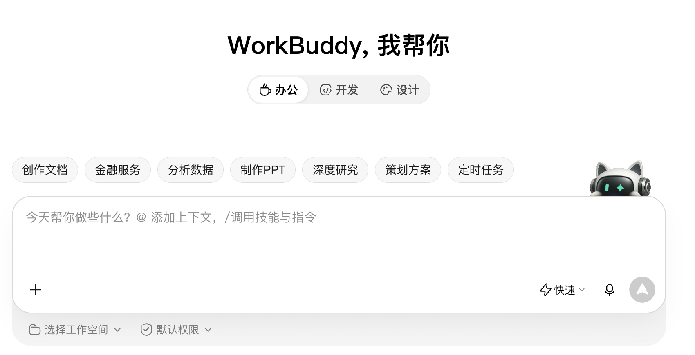
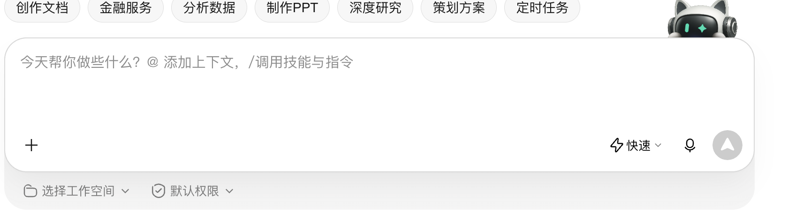

工具实操：三个真实任务
工具分工讲完，接下来看三个真实任务怎么落地。重点不是记住按钮位置，而是看清楚：什么任务交给哪类工具、提示词怎么给、结果怎么验收。
把一份会议记录，变成正式纪要和待办表
这类任务要读文件、拆步骤、再写出文件，正好是 Agent 型工具的用武之地。
WorkBuddy 是腾讯出的桌面端 AI 工作台。它和聊天框最大的区别是：你给它一个工作空间和一条任务，它会自己拆步骤、读文件、调用工具，最后把文件放进工作空间；过程留在对话区，结果留在右侧结果区。适合“要做几步、还要落到文件”的活。

办公、开发、设计。日常文书选“办公”，不要一上来就选开发。
直接写任务；@ 引用文件或文档，+ 上传文件，也可以把文件拖进来。
左下角“选择工作空间”，右下角“默认权限”。先划边界，再发任务。

先准备一个“只放这次材料”的工作空间
在桌面新建一个文件夹，例如 搬迁会议-1120，只放这次要处理的会议记录。
任务描述：把“要求”写具体
你是一名有 10 年经验的行政主管，擅长把口语化的会议记录整理成可执行的正式文件。 背景：这是 11 月 20 日园区搬迁协调会的速记，参会人包括行政、物业、IT 三个部门。记录里有讨论、跑题和重复内容，部分事项没有明确负责人；有员工问到搬迁当天的班车，会上只说“再确认”，没有形成结论。 任务：整理成一份正式会议纪要，并单独列出待办表。 要求： - 只写记录里出现过的信息；没有依据的内容标为“待确认”，不要编造。 - 区分“讨论”与“决议”；决议必须有明确结论。 - 待办表包含：事项、负责人、截止时间、依赖/风险。 - 人名、部门名、日期保持原样；无法确认的用【待确认】。 输出格式： 1. 会议纪要（Markdown，含会议主题、时间、参会人、议题、决议） 2. 待办表（Markdown 表格） 3. 保存为「会议纪要-1120.md」，放在当前工作空间。
操作步骤
- 新建任务，场景选“办公”。在左侧点“新建任务”，确认顶部场景是“办公”。
- 选择工作空间。点输入框左下角的“选择工作空间”，选中刚才那个文件夹。它会成为这次任务读写文件的边界。
- 上传记录，粘贴提示词。把会议记录拖进对话框，或点“+”上传；再把上面的提示词粘进去。发送前先扫一眼：有没有真实姓名、电话、客户名？有就换成 A、B、C。
- 在右侧结果区验收。“产物”看交付文件，“工作空间文件”看目录结构，“变更”看这次改了哪些文件。重点核对人名、日期、负责人和数字。
- 交付或归档。另存为、导出，或按单位规定上传到协作空间。生成公开分享链接前，再确认一次里面没有敏感信息。
它应该交回什么
| 序号 | 待办事项 | 负责人 | 截止时间 | 状态 |
|---|---|---|---|---|
| 1 | 确认新园区车位数量与分配规则 | 物业-王工 | 11月25日 | 待办 |
| 2 | 统计各部门工位需求 | 行政-李敏 | 11月27日 | 待办 |
| 3 | 完成新园区网络与门禁联调 | IT-陈浩 | 12月3日 | 待办 |
| 4 | 确认搬迁当天班车安排 | 【待确认】 | 【待确认】 | 待确认 |
第 4 条在原始记录里只说了“班车再确认”，没有形成决议、也没有指定负责人。把它标成“待确认”，比替会议编一个负责人和日期更专业。这就是验收时要看的地方。
验收清单
- 每条待办都有明确负责人和截止时间？没有就标“待确认”，不要替会议做主。
- “讨论过”和“已决定”分开了吗？不要把讨论中的方案写成决议。
- 人名、部门、日期、数字逐条对照原始记录；重点看金额、数量和“本周/下周”这类相对时间。
- 引用的是最新版记录吗？有没有漏页、漏掉的附件？
- 输出文件真的写进了指定目录吗？文件名符合单位规范吗？
- 公开链接、云端上传、转发到微信之前，确认权限和脱敏都处理好了。
用 6 条流水账，写出一份不空洞的周报
不需要读文件、也不需要产出文件时，对话工具仍然是最快、最可控的选择。
周报写不出来，通常不是因为“不会写”，而是因为手上只有流水账。对话工具的价值是帮你把事实重新组织，而不是替你回忆事实。先把这周做过的事列成 6 条，再让 AI 整理。
下面以 DeepSeek、Kimi 这类对话工具为例；换成豆包、ChatGPT 等同类工具，操作思路一样，入口以你使用的版本为准。
你是一名制造业公司的运营专员，向部门经理汇报。 背景：这是我这周的 6 条工作记录： - 周一：整理 3 条客户投诉，2 条是物流延迟，1 条是包装破损； - 周二：和仓库确认新的退货流程，平均处理时间从 5 天降到 3 天； - 周三：参加园区搬迁会，负责统计工位； - 周四：给 12 家客户发对账单，收回 8 家； - 周五：写了下月促销方案初稿，还没定； - 周五：跟进 A 客户的破损赔付，等财务确认。 任务：写一份 300 字以内的周报。 要求： - 按“本周完成 / 存在问题 / 下周计划”三段写； - 只使用我给的事实，不要编造数据； - 把“还没定/等确认”的事放进下周计划或风险，不要写成已完成； - 语气平实，不喊口号。 输出格式：三段式，每段 2—3 句。
操作要点
- 先列事实，再打开 AI。把“做了什么、做到哪一步、卡在哪里”写成短句。不要一边想一边让 AI 猜。
- 要求先提纲、后成文。如果直接要 300 字，它容易用套话填满；先让它列三段提纲，你确认后再展开。
- 追问一次“哪些是推断”。例如：“上面哪些句子是我没给你的推断？哪些事实需要我补？”这一步能逼出隐藏的编造。
- 自己补数据和进度。“从 5 天降到 3 天”这类数字，必须来自你的记录；AI 只负责把它放到合适的位置。
这个任务为什么不用 WorkBuddy？因为它不需要读本地文件，也不需要生成文件；一轮对话就能完成，开工作空间反而增加操作成本。工具不是越重越好，匹配任务就行。
内容定稿后，再让 PPT 工具做视觉
PPT 工具擅长模板、排版和导出，不擅长替你想清楚每页要说什么。顺序反了，返工最多。
很多工具能“一键生成 PPT”，页面很漂亮，但内容常常泛泛而谈，甚至编数据。正确的顺序是：先在文档里把内容定稿，再进 PPT 工具做视觉。PPT 阶段只解决“看起来清楚”，不解决“说得对不对”。
下面以 WPS AI、腾讯文档这类带 AI 的演示工具为例；换成 Canva、Gamma 等同类工具，步骤也一样。
先把大纲写成“一页一句结论”
每页只留一个结论句和最多 3 条依据。图表位置先写“留白”，等数据确认后再放，避免 PPT 工具用假数据填满。
再交给 PPT 工具
请根据下面的 7 页大纲生成一份汇报 PPT 初稿。 要求： - 16:9，风格简洁，主色深绿； - 每页只保留一个结论句和最多 3 条要点； - 不要添加大纲里没有的数据、案例或人名； - 图表位置留白，标注“待替换”，等我放真实数据； - 需要强调的数字用大字号，但不要改变数字本身。 大纲： （把上面 7 页内容粘在这里）
- 选模板，不选“智能创作”。优先用单位模板或品牌模板；没有就选一个干净的，别让模板抢内容。
- 生成后逐页删。删形容词、删重复句、删没有出处的数据；一页只留一个重点。
- 图表回到原始表格核对。PPT 工具生成的图表，数字和口径都要重新对一遍；对不上就删掉重做。
- 导出前检查。页码、目录、字体、图片版权、备注页里有没有残留的敏感信息。
三个案例怎么选
| 你的任务长什么样 | 优先用 | 为什么 | 对应案例 |
|---|---|---|---|
| 要读多个文件、步骤多、最后要交文件 | Agent 型工作台 | 能自己拆步骤、调用工具、把结果落到工作空间 | 案例一 · WorkBuddy |
| 一次性起草、改写、提炼、换语气 | 对话型工具 | 快、成本低、随时追问，不需要配置工作空间 | 案例二 · 周报 |
| 内容已定稿，只差排版、配图和导出 | 输出型工具 | 模板和导出能力强，但不负责内容判断 | 案例三 · PPT |
判断顺序：先看任务要几步、要不要碰文件；再看是否需要排版。工具可以换，判断顺序不用换。